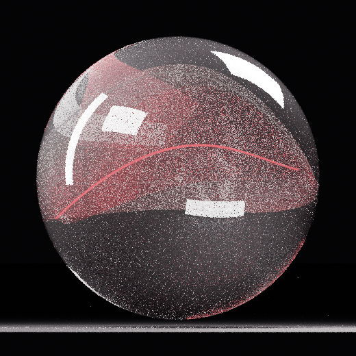
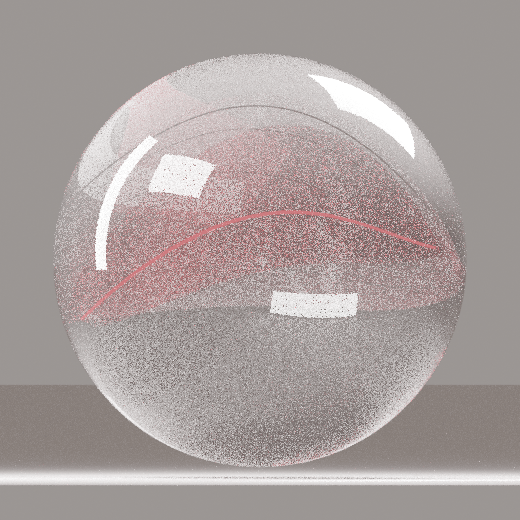
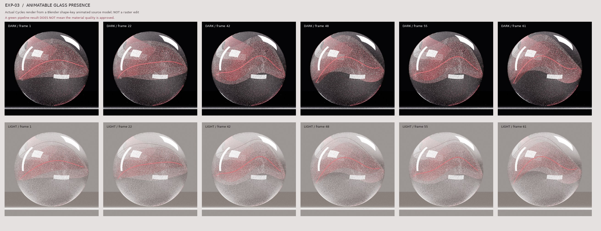

This is a proof that the form is an editable 3D model with real, keyed deformation. It is NOT the approved appearance of Orbis. Both themes use actual rendered material and lighting changes. The GIF samples only six frames; it is NOT production-smooth. The .blend source and full PNGs are available from GitHub Actions artifacts.



No CSS glow overlay or pre-existing generated image used. All visible differences come from Blender geometry shape keys. These previews must still pass visual approval.